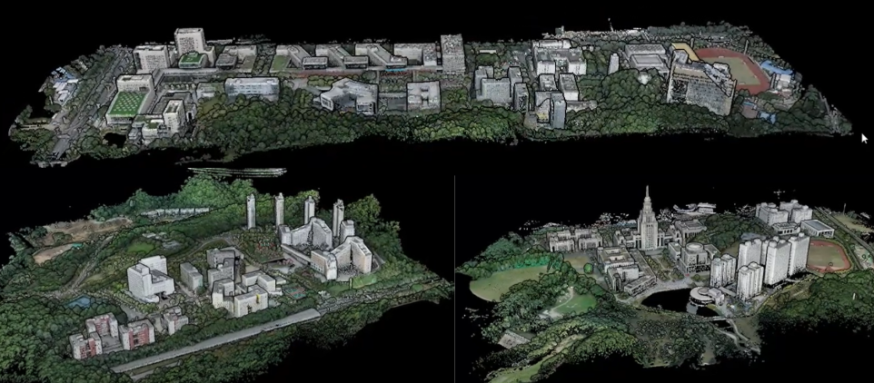
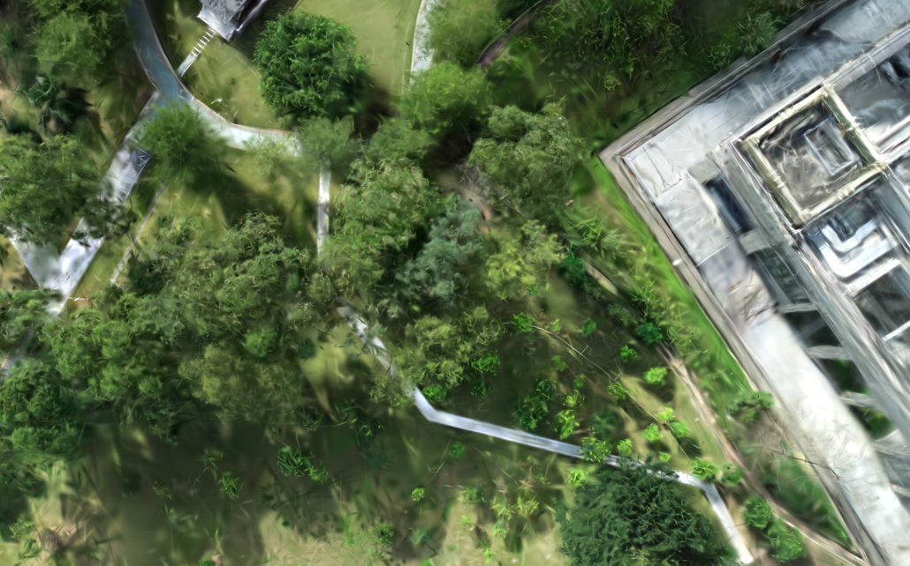
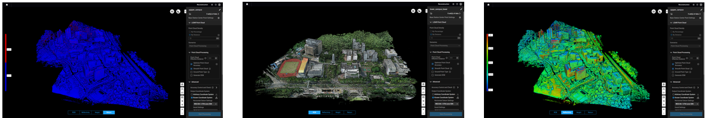

<!DOCTYPE html>
<html>
<head>
  <meta charset="utf-8">
  <!-- Meta tags for social media banners, these should be filled in appropriatly as they are your "business card" -->
  <!-- Replace the content tag with appropriate information -->
  <meta name="description" content="DESCRIPTION META TAG">
  <meta property="og:title" content="SOCIAL MEDIA TITLE TAG"/>
  <meta property="og:description" content="SOCIAL MEDIA DESCRIPTION TAG TAG"/>
  <meta property="og:url" content="URL OF THE WEBSITE"/>
  <!-- Path to banner image, should be in the path listed below. Optimal dimenssions are 1200X630-->
  <meta property="og:image" content="static/image/your_banner_image.png" />
  <meta property="og:image:width" content="1200"/>
  <meta property="og:image:height" content="630"/>


  <meta name="twitter:title" content="TWITTER BANNER TITLE META TAG">
  <meta name="twitter:description" content="TWITTER BANNER DESCRIPTION META TAG">
  <!-- Path to banner image, should be in the path listed below. Optimal dimenssions are 1200X600-->
  <meta name="twitter:image" content="static/images/your_twitter_banner_image.png">
  <meta name="twitter:card" content="summary_large_image">
  <!-- Keywords for your paper to be indexed by-->
  <meta name="keywords" content="KEYWORDS SHOULD BE PLACED HERE">
  <meta name="viewport" content="width=device-width, initial-scale=1">


  <title>Academic Project Page</title>
  <link rel="icon" type="image/x-icon" href="static/images/favicon.ico">
  <link href="https://fonts.googleapis.com/css?family=Google+Sans|Noto+Sans|Castoro"
  rel="stylesheet">

  <link rel="stylesheet" href="static/css/bulma.min.css">
  <link rel="stylesheet" href="static/css/bulma-carousel.min.css">
  <link rel="stylesheet" href="static/css/bulma-slider.min.css">
  <link rel="stylesheet" href="static/css/fontawesome.all.min.css">
  <link rel="stylesheet"
  href="https://cdn.jsdelivr.net/gh/jpswalsh/academicons@1/css/academicons.min.css">
  <link rel="stylesheet" href="static/css/index.css">
  <!-- Bootstrap CSS -->
  <link rel="stylesheet" href="https://stackpath.bootstrapcdn.com/bootstrap/4.3.1/css/bootstrap.min.css">

  <!-- Optional: Bootstrap JS and its dependencies (jQuery and Popper) -->
  <script src="https://code.jquery.com/jquery-3.3.1.slim.min.js"></script>
  <script src="https://cdnjs.cloudflare.com/ajax/libs/popper.js/1.14.7/umd/popper.min.js"></script>
  <script src="https://stackpath.bootstrapcdn.com/bootstrap/4.3.1/js/bootstrap.min.js"></script>

  <script src="https://ajax.googleapis.com/ajax/libs/jquery/3.5.1/jquery.min.js"></script>
  <script src="https://documentcloud.adobe.com/view-sdk/main.js"></script>
  <script defer src="static/js/fontawesome.all.min.js"></script>
  <script src="static/js/bulma-carousel.min.js"></script>
  <script src="static/js/bulma-slider.min.js"></script>
  <script src="static/js/index.js"></script>
</head>
<body>


  <section class="hero">
    <div class="hero-body">
      <div class="container is-max-desktop">
        <div class="columns is-centered">
          <div class="column has-text-centered">
            <h1 class="title is-1 publication-title">GauUscene</h1>
            <div class="is-size-5 publication-authors">
              <!-- Paper authors -->
              <span class="author-block">
                <a href="saliteta.github.io" target="_blank">Butian Xiong</a><sup>*</sup>,</span>
                <span class="author-block">
                  <a href="https://mypage.cuhk.edu.cn/academics/lizhen/" target="_blank">Zhen Li</a>,</span>
                  <span class="author-block">
                    <a href="https://sse.cuhk.edu.cn/en/faculty/cuishuguang" target="_blank">Shuguang Cui</a>
                  </span>
                  </div>

                  <div class="is-size-5 publication-authors">
                    <span class="author-block">The Chinese University of Hong Kong, Shenzhen<br>Conferance name and year</span>
                  </div>


                    <!-- Supplementary PDF link -->
                    <span class="link-block">
                      <a href="https://github.com/saliteta/CUHKSZ_SMBU/blob/master/static/pdfs/U_Scene.pdf" target="_blank"
                      class="external-link button is-normal is-rounded is-dark">
                      <span class="icon">
                        <i class="fas fa-file-pdf"></i>
                      </span>
                      <span>Paper</span>
                    </a>
                  </span>

                  <!-- Github link -->
                  <span class="link-block">
                    <a href="https://cuhko365-my.sharepoint.com/:f:/g/personal/120090584_link_cuhk_edu_cn/EthvgXDXuIZDioyGBwThHQgBjD1_WM0JDuq2LGtPKmtOuA?e=0kEAui" target="_blank"
                    class="external-link button is-normal is-rounded is-dark">
                    <span class="icon">
                      <i class="fab fa-github"></i>
                    </span>
                    <span>Dataset</span>
                  </a>
                </span>

                <!-- ArXiv abstract Link -->
                <span class="link-block">
                  <a href="https://arxiv.org/abs/<ARXIV PAPER ID>" target="_blank"
                  class="external-link button is-normal is-rounded is-dark">
                  <span class="icon">
                    <i class="ai ai-arxiv"></i>
                  </span>
                  <span>arXiv</span>
                </a>
              </span>
            </div>
          </div>
        </div>
      </div>
    </div>
  </div>
</section>


<!-- Paper abstract -->
<section class="section hero is-light">
  <div class="container is-max-desktop">
    <div class="columns is-centered has-text-centered">
      <div class="column is-four-fifths">
        <h2 class="title is-3">Abstract</h2>
        <div class="content has-text-justified">
          <p>
            We introduce a novel large-scale scene reconstruction
benchmark using the newly developed 3D representation
approach, Gaussian Splatting, on our expansive U-Scene
dataset. U-Scene encompasses over one and a half square
kilometres, featuring a comprehensive RGB dataset coupled with LiDAR ground truth. For data acquisition, we
employed the Matrix 300 drone equipped with the highaccuracy Zenmuse L1 LiDAR, enabling precise rooftop data
collection. This dataset, developed under the auspices of
the Chinese University of Hong Kong and Shenzhen MSUBIT University, offers a unique blend of urban and academic environments for advanced spatial analysis. Our
evaluation of U-Scene with Gaussian Splatting includes a
detailed analysis across various novel viewpoints. We also
juxtapose these results with those derived from our accurate
point cloud dataset, highlighting significant differences that
underscore the importance and innovation of our work.
          </p>
        </div>
      </div>
    </div>
  </div>
</section>
<!-- End paper abstract -->


<!-- Image carousel -->
<section class="hero is-small">
  <div class="hero-body">
    <div class="container">
      <div id="results-carousel" class="carousel results-carousel">
       <div class="item">
        <!-- Your image here -->
        
        <h2 class="subtitle has-text-centered">
          Our dataset is divided into three main parts. The first part is the top part of this graph. We call it CUHKSZ(The Chinese
University of Hong Kong, Shenzhen) lower campus, and the bottom left corner shows the upper campus of CUHKSZ, and the bottom right
corner shows the SMBU(Shenzhen MSU-BIT University) Campus. We use highly accurate lidar to collect the dataset and the range we
cover is more than 1.5 km^2
        </h2>
      </div>
      <div class="item">
        <!-- Your image here -->
        
        <h2 class="subtitle has-text-centered">

        he figure shown here is one small portion in Gaussian
Splatting Reconstructed Scene From Top View
        </h2>
      </div>
      <div class="item">
        <!-- Your image here -->
        
        <h2 class="subtitle has-text-centered">

        The left one is the quality of the point if the point is blue, then the quality is ok, otherwise it is red. The right-hand side picture
shows the point’s altitude, and the middle one is the RGB point cloud
        </h2>
     </div>
    </div>
  </div>
</div>
</div>
</section>
<!-- End image carousel -->


<!-- End video carousel -->
<section class="hero is-small">
  <div class="hero-body">
    <div class="container">
      <div id="results-carousel" class="carousel results-carousel">
       <div class="item">
        <!-- Your video here -->

           <iframe src="https://www.youtube.com/embed/VZ09EGwnclA" frameborder="0" allow="autoplay; encrypted-media" allowfullscreen></iframe>

         
      </div>
      <div class="item">
        <!-- Your video here -->

            <iframe src="https://www.youtube.com/embed/AUegUqHEt68" frameborder="0" allow="autoplay; encrypted-media" allowfullscreen></iframe>
        
      </div>
      <div class="item">
        <!-- Your video here -->
            <iframe src="https://www.youtube.com/embed/9NMWPXc_pw8" frameborder="0" allow="autoplay; encrypted-media" allowfullscreen></iframe>
     </div>
    </div>
  </div>
</div>
</div>
</section>
<!-- End video carousel -->


  


<!--BibTex citation -->
  <section class="section" id="BibTeX">
    <div class="container is-max-desktop content">
      <h2 class="title">BibTeX</h2>
      <pre><code>BibTex Code Here</code></pre>
    </div>
</section>
<!--End BibTex citation -->


  <footer class="footer">
  <div class="container">
    <div class="columns is-centered">
      <div class="column is-8">
        <div class="content">

          <p>
            This page was built using the <a href="https://github.com/eliahuhorwitz/Academic-project-page-template" target="_blank">Academic Project Page Template</a> which was adopted from the <a href="https://nerfies.github.io" target="_blank">Nerfies</a> project page.
            You are free to borrow the of this website, we just ask that you link back to this page in the footer. <br> This website is licensed under a <a rel="license"  href="http://creativecommons.org/licenses/by-sa/4.0/" target="_blank">Creative
            Commons Attribution-ShareAlike 4.0 International License</a>.
          </p>

        </div>
      </div>
    </div>
  </div>
</footer>

<!-- Statcounter tracking code -->
  
<!-- You can add a tracker to track page visits by creating an account at statcounter.com -->

    <!-- End of Statcounter Code -->

  </body>
  </html>
